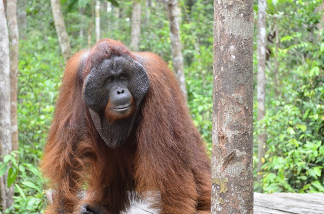

Orangutan

“Orangutan” is Malaysian for “person of the forest.” Though
morphologically they may resemble melted Muppets more than people,
their sophisticated cognitive abilities are very human indeed.
Like gorillas and chimpanzees, they have been known to use tools.
Due in large part to logging and capture for the exotic pet trade,
orangutans—restricted to the Southeast Asian islands of Borneo and
Sumatra—number fewer than 60,000 per a 2004 study. Unlike other great
apes, they are usually solitary or live in groups of fewer than three,
making them difficult to track and study.